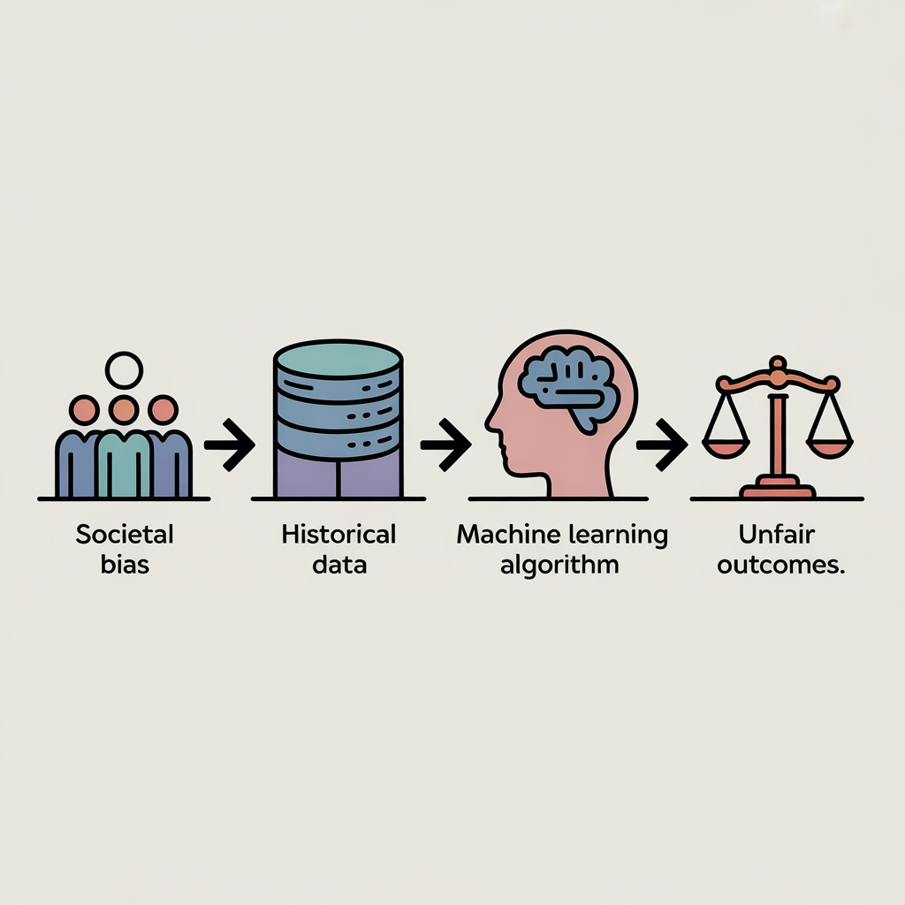

Introduction: Why Algorithmic Fairness Matters
Algorithms play a growing role in our everyday lives. They help decide who gets a loan, which job applications are reviewed, what content we see online, and even how likely someone is to reoffend. Because these systems influence important decisions, it is reasonable to expect them to be fair and objective. Many people assume that algorithms are neutral by design, since they are based on mathematics rather than human judgment. However, this assumption is misleading.
As computer scientist Cathy O’Neil famously wrote, “Algorithms are opinions embedded in code.” Algorithms do not exist in isolation. They are built by people, trained on data collected from the real world, and optimized according to specific goals. If the data used to train an algorithm reflects inequality or exclusion, the algorithm is likely to reproduce and sometimes amplify those same patterns.
This blog post explores how biased data leads to unfair algorithms. By understanding where bias comes from and how it enters data driven systems, we can better evaluate claims of algorithmic objectivity and think more critically about the technologies that increasingly shape our lives.
What Is Data Bias?
At its core, data bias occurs when a dataset does not accurately or fairly represent the population it is meant to describe. This can happen in many ways. Imagine trying to understand the opinions of an entire city by interviewing only people from one neighborhood. The conclusions you draw would likely be incomplete or misleading. Data bias works in a similar way: when certain groups are overrepresented, underrepresented, or misrepresented, the resulting dataset provides a distorted view of reality.
One common source of data bias is historical bias. Much of the data used today is based on historical records, such as earlier hiring decisions, loan approvals, and arrest rates. Because history itself includes inequality and discrimination, these patterns become embedded in the data. Bias does not always result from deliberate choices; it can continue simply because current systems inherit the patterns of the past.
Another source is sampling bias, which occurs when data is collected from a non-representative subset of the population. For example, a dataset built from social media users may underrepresent older adults or people without reliable internet access. Finally, measurement bias can arise when certain characteristics are measured more accurately for some groups than others, leading to systematic errors.
Importantly, data bias is often invisible. A dataset may look large and comprehensive while still excluding or misrepresenting important segments of the population.
How Biased Data Turns Into Unfair Algorithms

Figure 1: Conceptual illustration of how biased data influences algorithmic outcomes (generated with AI).
To understand how biased data leads to unfair algorithms, it helps to think about how machine learning systems are trained. In simple terms, algorithms learn patterns from data and use those patterns to make predictions about new cases. Their objective is usually to maximize accuracy or efficiency, not fairness.
If a dataset reflects biased outcomes, the algorithm will treat those outcomes as signals to be learned. For example, suppose a company has historically hired more men than women for technical roles. A hiring algorithm trained on past hiring data may learn that being male is correlated with success, even if gender is not explicitly included as a feature. As a result, the algorithm may rank male candidates higher than equally qualified female candidates.
This problem is sometimes summarized as “biased in, biased out.” Algorithms do not question whether the patterns they learn are just or ethical. They simply optimize based on the data and objective function provided. In some cases, algorithms can even amplify bias by applying it consistently and at scale, affecting far more people than an individual human “decision maker” would.
Another issue is that algorithms often rely on proxy variables. Even if sensitive attributes like race or gender are removed, other features—such as zip code, education history, or employment gaps can indirectly encode the same information. This makes it difficult to eliminate bias simply by excluding certain columns from a dataset.
Real-World Examples of Algorithmic Bias
The consequences of biased algorithms are not theoretical; they appear in many real world applications.
One well known example involves hiring algorithms used to screen resumes. If these systems are trained on historical hiring data from industries that have traditionally favored certain groups, they may systematically disadvantage women or minorities. Rather than correcting past inequalities, the algorithm reinforces them under the appearance of objectivity.
Bias has also been observed in credit scoring and loan approval systems. When historical data reflects unequal access to credit, algorithms trained on this data may assign higher risk scores to applicants from marginalized communities. This can make it harder for individuals to secure loans, perpetuating cycles of financial exclusion.
Another area of concern is predictive policing and criminal justice risk assessment tools. These systems often rely on historical arrest or conviction data. Because policing practices have disproportionately targeted certain neighborhoods and demographic groups, the data itself reflects systemic bias. When algorithms use this data to predict crime or recidivism, they may unfairly label individuals as high-risk based on patterns rooted in unequal enforcement rather than actual behavior.
These examples illustrate that algorithmic bias is not just a technical issue—it has real consequences for people’s lives and opportunities.
Can We Fix Biased Algorithms?
Addressing algorithmic bias is challenging, and there is no single solution. One common misconception is that removing sensitive attributes like race or gender from a dataset will automatically make an algorithm fair. In reality, bias can persist through proxy variables and structural patterns in the data.
Improving fairness often requires changes at multiple stages of the data science pipeline. This includes collecting more representative data, carefully examining how features are defined, and choosing evaluation metrics that go beyond overall accuracy. In some cases, “fairness aware” algorithms can be used to balance competing goals, though these approaches often involve tradeoffs.
Transparency and accountability are also crucial. When algorithms are used in high-stakes decision making, it should be clear how they work, what data they rely on, and what limitations they have. Human oversight remains essential, particularly in contexts where automated decisions can significantly impact individuals’ lives.
Ultimately, algorithmic fairness is not just a technical problem—it is a social one. Decisions about what counts as “fair” depend on values, context, and societal priorities.
Conclusion: Why This Matters to Everyone
Algorithms are becoming deeply embedded in modern society, influencing decisions that affect education, employment, healthcare, and justice. While these systems can offer efficiency and consistency, they are not inherently neutral. When trained on biased data, algorithms can reproduce and even magnify existing inequalities.
Understanding how biased data leads to unfair algorithms helps us move beyond the myth of objectivity and recognize the human choices embedded in technology. By questioning where data comes from, how algorithms are designed, and who is affected by their outputs, we can engage more critically with data driven systems.
Fairer algorithms are possible, but only if we acknowledge that fairness must be intentionally designed and not assumed.